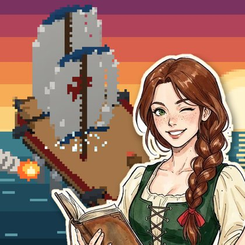
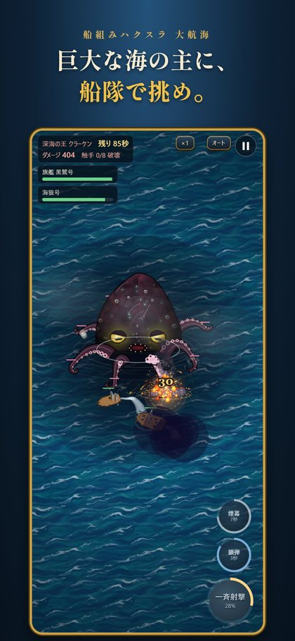
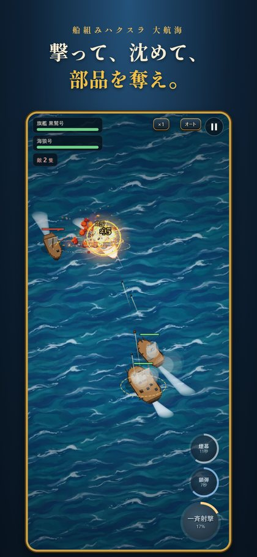
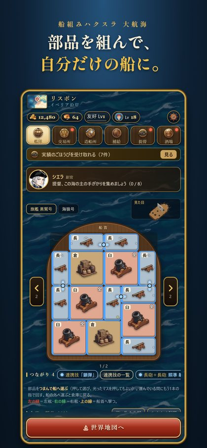
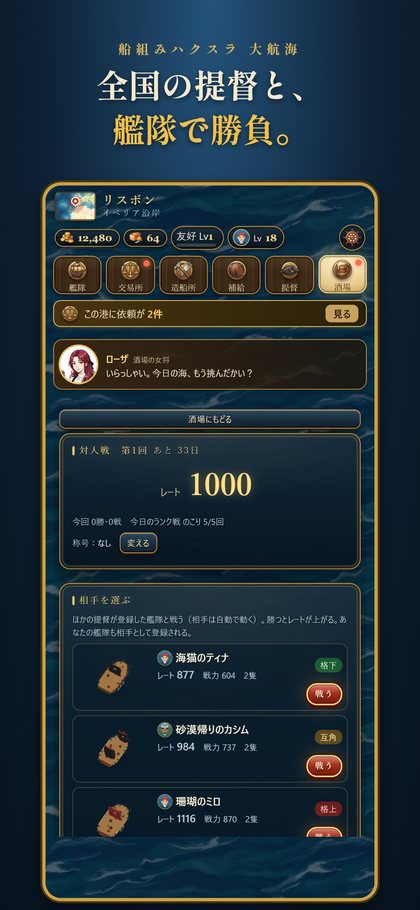
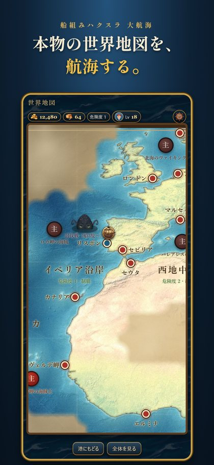
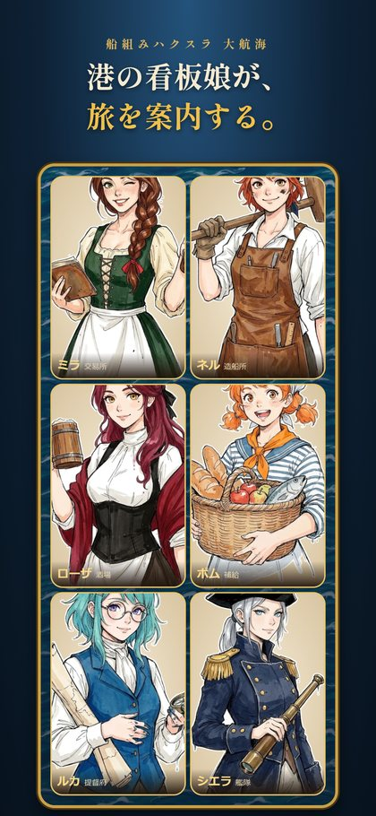
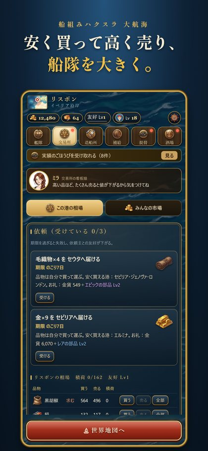
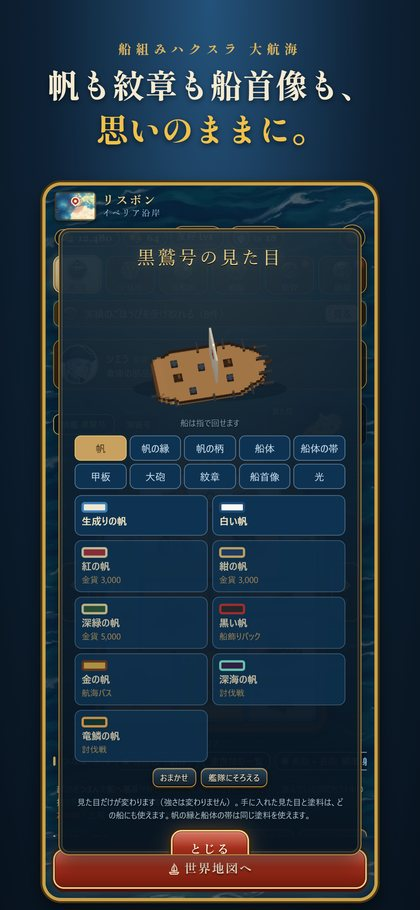

記事・動画でご紹介いただく時の素材と情報をまとめたページです。（最終更新：2026年11月26日）

大砲・帆・装甲……船のマスに部品を組んで、世界の海へ。海賊を沈めて部品を奪い、交易で稼いで、船隊をどこまでも強くするハクスラ航海ゲームです。
| タイトル | 船組みハクスラ 大航海（英語名：Shipcraft Plunder Voyage） |
|---|---|
| ジャンル | ハクスラ航海ゲーム（船の部品のビルド × 海戦 × 交易） |
| 対応機種 | iPhone（iOS） |
| 価格 | 基本無料（アプリ内課金あり・有料のガチャなし） |
| 配信 | App Store で先行リリース中 |
| 対応言語 | 日本語・英語 |
| 開発・販売 | ruby-yama（個人開発） |
| App Store | https://apps.apple.com/jp/app/id6838352120 |
| 公式サイト | https://rubygames.net/games/shipcraft/ |
| 権利表記 | © 2026 ruby-yama |

討伐戦（クラーケン） 1290×2796
海戦 1290×2796
船を組む 1290×2796
対人戦 1290×2796
世界地図 1290×2796
港の看板娘 1290×2796
交易 1290×2796
船の見た目 1290×2796ruby-yama：iPhone 向けに『OPARTS DIVE』『ORANGE GEAR ― OPARTS ZERO』などを配信している個人開発者です。ゲームの仕組みから絵の調整まで1人で作っています。キャラクターの絵は画像生成AIを使って制作し、調整を行っています。
取材・追加の素材のご依頼はお気軽にどうぞ。
hello@rubygames.net（rubygames／ruby-yama）
Shipcraft Plunder Voyage is a hack-and-slash naval adventure for iPhone by solo developer ruby-yama. Fit cannons, sails and armor into each ship's grid, sink pirates to loot their parts, trade across 45 real-world ports, and face weekly giant sea bosses and other admirals' fleets. Free to play, available in English. All images and the video may be used freely for coverage; gameplay videos and streams may be monetized without asking.